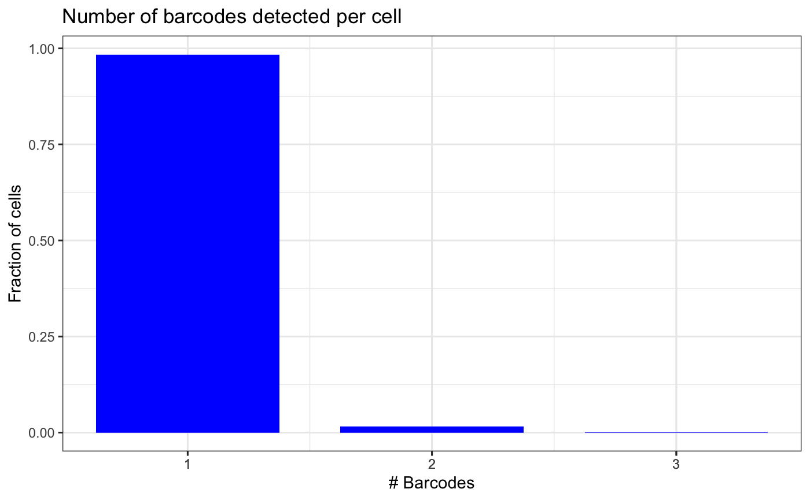
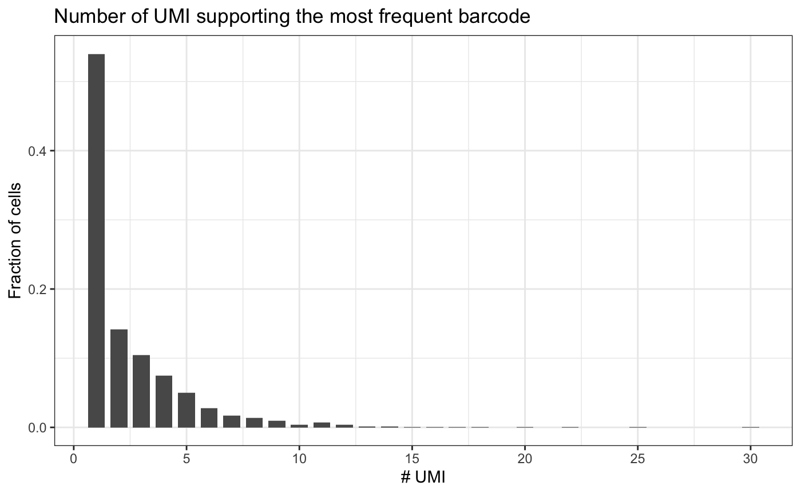
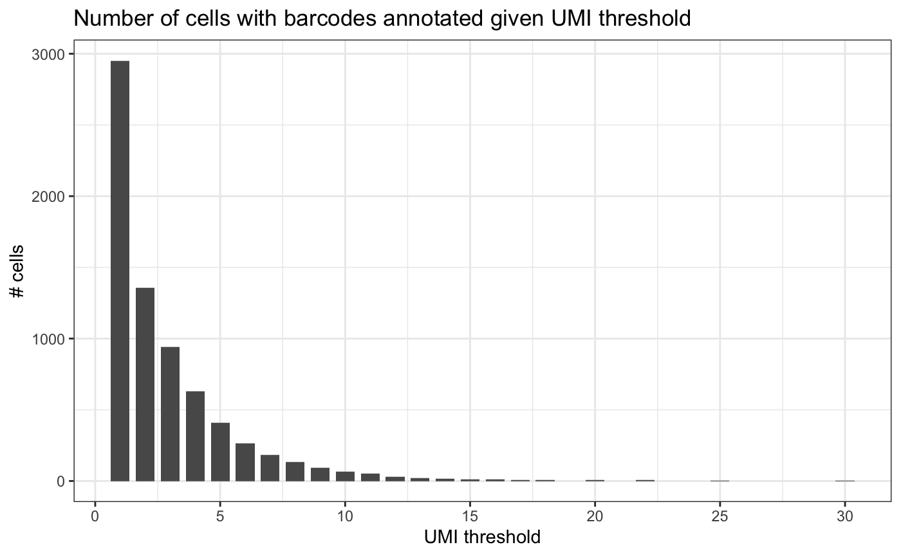
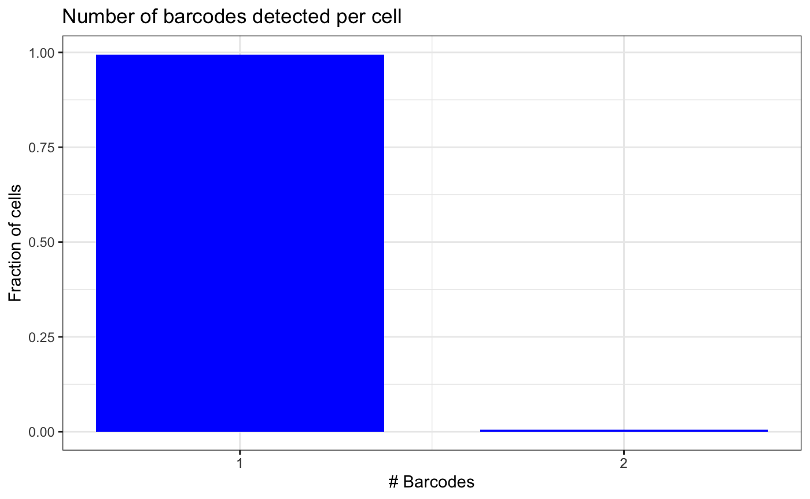
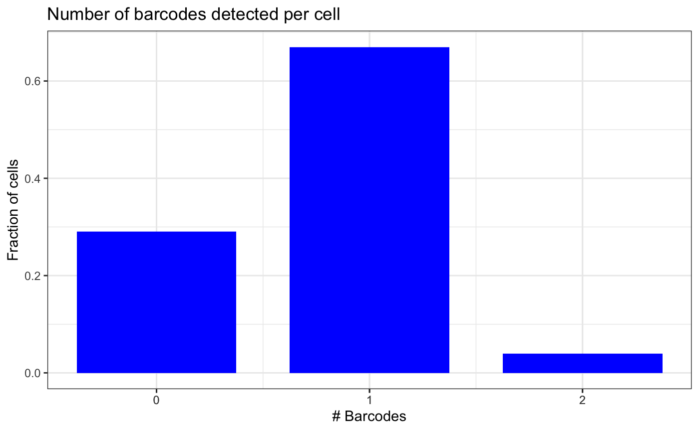
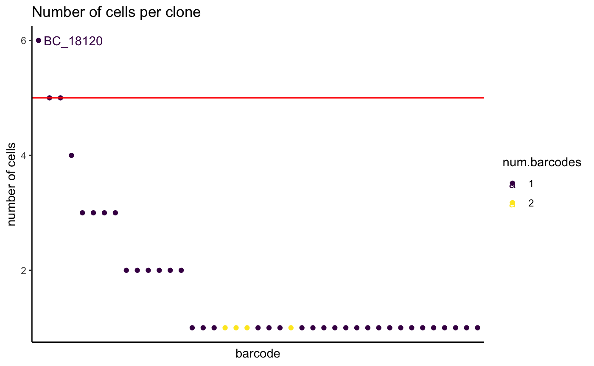
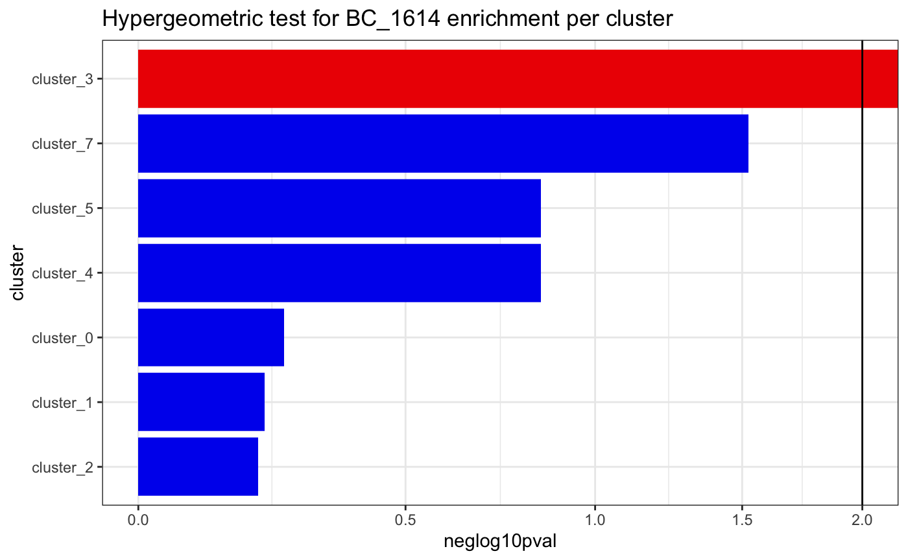
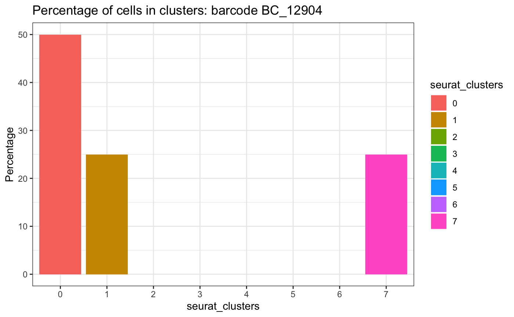

bartools: import and QC single-cell barcode data
Henrietta Holze
September 05, 2023
import_qc_single_cell.RmdImport and QC of single-cell barcode data
This vignette shows how to 1. Import the barcode counts table produced by BARtab single-cell workflow 2. Creat QC plots and filter barcodes 3. Add barcode counts to a Seurat object 4. Analyze and visualize barcoded single-cell RNA-seq data
If filtering has already been performed by BARtab, using
umi_count_filter and umi_fraction_filter
parameters, skip to section 2.
If the QC thresholds need to be revised, follow section 1.
0. Load the bartools package
library(bartools)## Loading required package: edgeR## Loading required package: limma## Loading required package: ggplot2
knitr::opts_chunk$set(dev="png")1. Import DNA barcode count data
Raw barcode count data can be thought of similarly to raw
integer-based count data from other count based experiments such as
RNA-sequencing. For these data types the edgeR package
provides an efficient DGEList object structure to store
sample counts and associated metadata. bartools makes use
of this object structure to store and process DNA barcode counts.
An example barcoding experiment
For this section we will make use of a hypothetical DNA barcoding dataset based on recent unpublished data from the Dawson lab investigating the response of acute myeloid leukaemia (AML) cells to a novel class of MYST acetyltransferase inhibitor described recently in MacPherson et al. Nature 2019.
AML cells were cultured in vitro, barcoded using a lentiviral based barcoding library called SPLINTR, and transplanted into three groups of C57BL/6J mice with daily dosing of MYST inhibitor at low or high dose or a corresponding vehicle control.
Barcode containing cells were harvested from the bone marrow of diseased mice and sequenced in technical replicate.
To follow along with this vignette the raw counts tables and sample
metadata are included in the bartools package.
2. QC and filter barcodes
First, we load the results of BARtab. Below is an example of how we
can load this data using the readBartabCounts function.
counts_path <- "full/path/to/BARtab/umi.counts.tsv"
counts <- readBartabCounts(counts_path)For now, users can follow along with this vignette using the test
dataset included in bartools
data(test.bartab.sc)This unfiltered barcode counts table is in long format and potentially has multiple rows per cell ID if multiple barcodes per cell are detected.
We assess the quality of the data by looking at the number of barcodes detected per cell and the number of UMIs supporting the most frequent barcode per cell.
plotBarcodesPerCell(test.bartab.sc)
plotUmiPerBarcode(test.bartab.sc)
In order to identify a suitable threshold for the minimum number of UMIs supporting a barcode, we can plot the cummulative sum of how many cells would pass each threshold.
plotUmiFilterThresholds(test.bartab.sc)
If we would remove barcodes that are supported by a single UMI, we would lose half the cells. Therefore, we do not filter based on minimum number of UMIs.
However, we can remove minor barcodes from cells, i.e. barcodes that have less than half the number of supporting UMIs than the major barcode in the cell.
counts_filtered <- filterBarcodes(test.bartab.sc, umiCountFilter = 2, umiFractionFilter = 0.5)The following plot shows that the number of cells with multiple barcodes detected is now reduced.
If we would want to keep only the most frequent barcode per cell, we
could do so with umi_fraction_filter = 1. Ties will be
kept.
plotBarcodesPerCell(counts_filtered)
Finally, we aggregate barcodes per cell by concatenating barcodes and
UMIs with ;.
counts_agg <- aggregateBarcodes(counts_filtered)
head(counts_agg)## cellid barcode bc.umi.count
## 1 AAACCCAAGTTTGTCG mCHERRY_Barcode_12409 4
## 2 AAACCCACAAGAGCTG mCHERRY_Barcode_14566 3
## 3 AAACCCATCAGACCCG mCHERRY_Barcode_12904 3
## 4 AAACGCTCATATAGCC mCHERRY_Barcode_1614 3
## 5 AAACGCTTCTCAGGCG mCHERRY_Barcode_1614 2
## 6 AAACGCTTCTGACAGT mCHERRY_Barcode_11745 3This allows to add the barcode data into the metadata of a
Seurat or SingleCellExperiment object.
2. Add barcode data to Seurat or SingleCellExperiment object
Barcode metadata import into Seurat
Generate Seurat object from Cell Ranger scRNA expression matrix.
library(Seurat)
expression.data <-
Read10X(data.dir = "../../bartools_sc_example/GEX_filtered_feature_bc_matrix/", strip.suffix = T)
sc <- CreateSeuratObject(
counts = expression.data,
min.cells = 3,
min.features = 200,
project = "bartools_example"
)
scAdd SPLINTR barcode annotation to metadata. Make sure the cell IDs
match. Potentially suffix needs to be added to the BARtab results
(e.g. -1). Add barcode and UMI count columns to the
metadata of the SCE object.
rownames(counts_agg) <- counts_agg$cellid
sc <- Seurat::AddMetaData(sc, counts_agg)Barcode metadata import into SingleCellExperiment
data(test.sce)
colData(test.sce)[c("barcode", "bc.umi.count")] <-
counts_agg[colnames(test.sce), c("barcode", "bc.umi.count")]## Loading required package: SingleCellExperiment## Loading required package: SummarizedExperiment## Loading required package: MatrixGenerics## Loading required package: matrixStats##
## Attaching package: 'MatrixGenerics'## The following objects are masked from 'package:matrixStats':
##
## colAlls, colAnyNAs, colAnys, colAvgsPerRowSet, colCollapse,
## colCounts, colCummaxs, colCummins, colCumprods, colCumsums,
## colDiffs, colIQRDiffs, colIQRs, colLogSumExps, colMadDiffs,
## colMads, colMaxs, colMeans2, colMedians, colMins, colOrderStats,
## colProds, colQuantiles, colRanges, colRanks, colSdDiffs, colSds,
## colSums2, colTabulates, colVarDiffs, colVars, colWeightedMads,
## colWeightedMeans, colWeightedMedians, colWeightedSds,
## colWeightedVars, rowAlls, rowAnyNAs, rowAnys, rowAvgsPerColSet,
## rowCollapse, rowCounts, rowCummaxs, rowCummins, rowCumprods,
## rowCumsums, rowDiffs, rowIQRDiffs, rowIQRs, rowLogSumExps,
## rowMadDiffs, rowMads, rowMaxs, rowMeans2, rowMedians, rowMins,
## rowOrderStats, rowProds, rowQuantiles, rowRanges, rowRanks,
## rowSdDiffs, rowSds, rowSums2, rowTabulates, rowVarDiffs, rowVars,
## rowWeightedMads, rowWeightedMeans, rowWeightedMedians,
## rowWeightedSds, rowWeightedVars## Loading required package: GenomicRanges## Loading required package: stats4## Loading required package: BiocGenerics##
## Attaching package: 'BiocGenerics'## The following object is masked from 'package:limma':
##
## plotMA## The following objects are masked from 'package:stats':
##
## IQR, mad, sd, var, xtabs## The following objects are masked from 'package:base':
##
## anyDuplicated, aperm, append, as.data.frame, basename, cbind,
## colnames, dirname, do.call, duplicated, eval, evalq, Filter, Find,
## get, grep, grepl, intersect, is.unsorted, lapply, Map, mapply,
## match, mget, order, paste, pmax, pmax.int, pmin, pmin.int,
## Position, rank, rbind, Reduce, rownames, sapply, setdiff, sort,
## table, tapply, union, unique, unsplit, which.max, which.min## Loading required package: S4Vectors##
## Attaching package: 'S4Vectors'## The following objects are masked from 'package:base':
##
## expand.grid, I, unname## Loading required package: IRanges## Loading required package: GenomeInfoDb## Loading required package: Biobase## Welcome to Bioconductor
##
## Vignettes contain introductory material; view with
## 'browseVignettes()'. To cite Bioconductor, see
## 'citation("Biobase")', and for packages 'citation("pkgname")'.##
## Attaching package: 'Biobase'## The following object is masked from 'package:MatrixGenerics':
##
## rowMedians## The following objects are masked from 'package:matrixStats':
##
## anyMissing, rowMedians##
## Attaching package: 'SingleCellExperiment'## The following object is masked from 'package:edgeR':
##
## cpm
head(colData(test.sce))## DataFrame with 6 rows and 27 columns
## orig.ident nCount_RNA nFeature_RNA percent.mito
## <factor> <numeric> <integer> <numeric>
## GCTACCTAGAGGCCAT bartools_example 14721 3122 6.86095
## ACTGCAAGTGATTCAC bartools_example 20112 3497 4.52963
## ATTTCTGGTTAGAGTA bartools_example 23773 4118 7.08367
## GAAGTAAAGTCATGGG bartools_example 6155 1942 4.17547
## CGGGACTCAAACCGGA bartools_example 30609 4583 4.80904
## TGCATCCCACCTGCTT bartools_example 9633 2401 4.93097
## nCount_HTO nFeature_HTO HTO_maxID HTO_secondID HTO_margin
## <numeric> <integer> <character> <character> <numeric>
## GCTACCTAGAGGCCAT 1098 2 MA9-1 MA9-2 1.426341
## ACTGCAAGTGATTCAC 748 2 MA9-1 MA9-2 1.483240
## ATTTCTGGTTAGAGTA 788 2 MA9-1 MA9-2 1.468272
## GAAGTAAAGTCATGGG 351 2 MA9-1 MA9-2 0.986854
## CGGGACTCAAACCGGA 731 2 MA9-1 MA9-2 1.398757
## TGCATCCCACCTGCTT 790 2 MA9-1 MA9-2 1.463313
## HTO_classification HTO_classification.global hash.ID
## <character> <character> <factor>
## GCTACCTAGAGGCCAT MA9-1 Singlet MA9-1
## ACTGCAAGTGATTCAC MA9-1 Singlet MA9-1
## ATTTCTGGTTAGAGTA MA9-1 Singlet MA9-1
## GAAGTAAAGTCATGGG MA9-1 Singlet MA9-1
## CGGGACTCAAACCGGA MA9-1 Singlet MA9-1
## TGCATCCCACCTGCTT MA9-1 Singlet MA9-1
## barcode bc.umi.count detected doubletBarcode
## <character> <character> <character> <character>
## GCTACCTAGAGGCCAT NA NA detected singlet
## ACTGCAAGTGATTCAC NA NA detected singlet
## ATTTCTGGTTAGAGTA NA NA detected singlet
## GAAGTAAAGTCATGGG NA NA not.detected unknown
## CGGGACTCAAACCGGA NA NA detected singlet
## TGCATCCCACCTGCTT NA NA detected singlet
## MA9_1_HTO_raw MA9_2_HTO_raw MA9_1_HTO_norm MA9_2_HTO_norm
## <numeric> <numeric> <numeric> <numeric>
## GCTACCTAGAGGCCAT 1017 81 1.88644 0.4600971
## ACTGCAAGTGATTCAC 729 19 1.61167 0.1284293
## ATTTCTGGTTAGAGTA 761 27 1.64620 0.1779307
## GAAGTAAAGTCATGGG 341 10 1.05650 0.0696444
## CGGGACTCAAACCGGA 703 28 1.58271 0.1839496
## TGCATCCCACCTGCTT 762 28 1.64726 0.1839496
## S.Score G2M.Score Phase old.ident RNA_snn_res.0.3
## <numeric> <numeric> <character> <factor> <factor>
## GCTACCTAGAGGCCAT 0.5712484 -2.98143 S Singlet 0
## ACTGCAAGTGATTCAC -0.7336216 -2.62838 G1 Singlet 3
## ATTTCTGGTTAGAGTA 0.7472527 -3.80758 S Singlet 1
## GAAGTAAAGTCATGGG -0.0413439 -1.08835 G1 Singlet 1
## CGGGACTCAAACCGGA -0.6348105 -3.49328 G1 Singlet 2
## TGCATCCCACCTGCTT -0.2304990 -1.44251 G1 Singlet 2
## seurat_clusters ident
## <factor> <factor>
## GCTACCTAGAGGCCAT 0 0
## ACTGCAAGTGATTCAC 3 3
## ATTTCTGGTTAGAGTA 1 1
## GAAGTAAAGTCATGGG 1 1
## CGGGACTCAAACCGGA 2 2
## TGCATCCCACCTGCTT 2 2Group barcode metadata into detected and not.detected
test.sce$detected <- ifelse(is.na(test.sce$barcode), "not.detected", "detected")
table(test.sce$detected)##
## not.detected
## 1004. Analyze and visualize barcoded scRNA-seq data
data(test.sce)
message("Percentage of cells with no barcode detected")## Percentage of cells with no barcode detected## [1] 29
message("Percentage of cells with a barcode detected")## Percentage of cells with a barcode detected## [1] 71We can repeat the QC plot to check how many barcodes were detected in a cell, including no barcodes detected.
plotBarcodesPerCell(test.sce, aggregated = T, sep = ",")
We can visualize the distribution of number of cells per clone.
For that, plot all clones, ordered by their size. A clone is here defined as barcode or unique combination of barcodes.
Usually, more than one barcode detected in a cell could mean a doublet. The number of cells for those clones tend to be low. Seeing more cells per clone with more than one barcode suggests it is truly from two integration events.
plotCellsPerGroup(
test.sce,
group = "barcode",
order = T,
threshold = 5,
plot = T,
label = T,
sep = ","
)
To check whether a clone is enriched in a cluster or cell type, we can perform a hypergeometric test.
plotClusterEnrichment(
test.sce,
group = "barcode",
factor = "BC_1614",
clusters = "seurat_clusters",
threshold = 0.01,
order = T,
plot = T
)## The following ident levels had no observations and were removed: 6## ---## cluster_0## all cells: 100## all BC_1614 cells: 3## universe: 97## cluster total cells: 24## cluster BC_1614 cells: 0## [1] "Hypergeometric test p-value: 0.565244279529994"## ---## cluster_1## all cells: 100## all BC_1614 cells: 3## universe: 97## cluster total cells: 27## cluster BC_1614 cells: 0## [1] "Hypergeometric test p-value: 0.615361781076067"## ---## cluster_2## all cells: 100## all BC_1614 cells: 3## universe: 97## cluster total cells: 28## cluster BC_1614 cells: 0## [1] "Hypergeometric test p-value: 0.631168831168831"## ---## cluster_3## all cells: 100## all BC_1614 cells: 3## universe: 97## cluster total cells: 10## cluster BC_1614 cells: 3## [1] "Hypergeometric test p-value: 0"## ---## cluster_4## all cells: 100## all BC_1614 cells: 3## universe: 97## cluster total cells: 5## cluster BC_1614 cells: 0## [1] "Hypergeometric test p-value: 0.14400123685838"## ---## cluster_5## all cells: 100## all BC_1614 cells: 3## universe: 97## cluster total cells: 5## cluster BC_1614 cells: 0## [1] "Hypergeometric test p-value: 0.14400123685838"## ---## cluster_7## all cells: 100## all BC_1614 cells: 3## universe: 97## cluster total cells: 1## cluster BC_1614 cells: 0## [1] "Hypergeometric test p-value: 0.03"
plotCellsInClusters(test.sce,
group = "barcode",
factor = "BC_12904",
clusters = "seurat_clusters")## # A tibble: 3 × 2
## seurat_clusters n
## <fct> <int>
## 1 0 2
## 2 1 1
## 3 7 1## Warning in ggplot2::geom_histogram(stat = "identity"): Ignoring unknown
## parameters: `binwidth`, `bins`, and `pad`
5. Session Info
## R version 4.2.2 (2022-10-31)
## Platform: aarch64-apple-darwin20 (64-bit)
## Running under: macOS 14.1.1
##
## Matrix products: default
## BLAS: /Library/Frameworks/R.framework/Versions/4.2-arm64/Resources/lib/libRblas.0.dylib
## LAPACK: /Library/Frameworks/R.framework/Versions/4.2-arm64/Resources/lib/libRlapack.dylib
##
## locale:
## [1] en_US.UTF-8/en_US.UTF-8/en_US.UTF-8/C/en_US.UTF-8/en_US.UTF-8
##
## attached base packages:
## [1] stats4 stats graphics grDevices utils datasets methods
## [8] base
##
## other attached packages:
## [1] SingleCellExperiment_1.20.1 SummarizedExperiment_1.28.0
## [3] Biobase_2.58.0 GenomicRanges_1.50.2
## [5] GenomeInfoDb_1.34.9 IRanges_2.32.0
## [7] S4Vectors_0.36.2 BiocGenerics_0.44.0
## [9] MatrixGenerics_1.10.0 matrixStats_1.0.0
## [11] bartools_1.0.0 ggplot2_3.4.4
## [13] edgeR_3.40.2 limma_3.54.2
##
## loaded via a namespace (and not attached):
## [1] viridis_0.6.4 sass_0.4.7 viridisLite_0.4.2
## [4] jsonlite_1.8.7 splines_4.2.2 bslib_0.6.0
## [7] highr_0.10 GenomeInfoDbData_1.2.9 ggrepel_0.9.4
## [10] yaml_2.3.7 pillar_1.9.0 lattice_0.21-9
## [13] glue_1.6.2 digest_0.6.33 XVector_0.38.0
## [16] colorspace_2.1-0 htmltools_0.5.7 Matrix_1.6-1.1
## [19] pkgconfig_2.0.3 zlibbioc_1.44.0 purrr_1.0.2
## [22] scales_1.2.1 tibble_3.2.1 mgcv_1.9-0
## [25] generics_0.1.3 farver_2.1.1 cachem_1.0.8
## [28] withr_2.5.2 cli_3.6.1 magrittr_2.0.3
## [31] memoise_2.0.1 evaluate_0.23 fs_1.6.3
## [34] fansi_1.0.5 nlme_3.1-163 MASS_7.3-60
## [37] vegan_2.6-4 textshaping_0.3.6 tools_4.2.2
## [40] ineq_0.2-13 data.table_1.14.8 lifecycle_1.0.4
## [43] stringr_1.5.1 munsell_0.5.0 locfit_1.5-9.8
## [46] DelayedArray_0.24.0 cluster_2.1.4 compiler_4.2.2
## [49] pkgdown_2.0.7 jquerylib_0.1.4 systemfonts_1.0.5
## [52] rlang_1.1.2 grid_4.2.2 RCurl_1.98-1.12
## [55] rstudioapi_0.15.0 bitops_1.0-7 labeling_0.4.3
## [58] rmarkdown_2.25 gtable_0.3.4 R6_2.5.1
## [61] gridExtra_2.3 knitr_1.45 dplyr_1.1.4
## [64] fastmap_1.1.1 utf8_1.2.4 rprojroot_2.0.4
## [67] ragg_1.2.5 permute_0.9-7 desc_1.4.2
## [70] stringi_1.8.1 parallel_4.2.2 Rcpp_1.0.11
## [73] vctrs_0.6.4 tidyselect_1.2.0 xfun_0.41